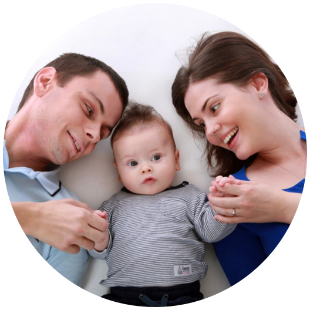
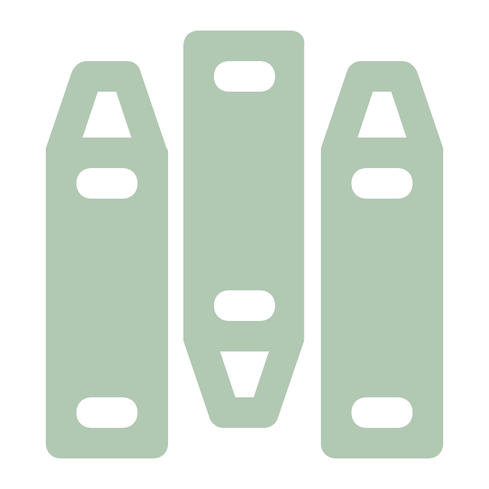
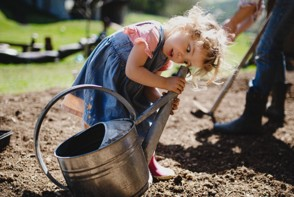
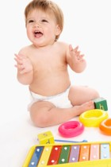
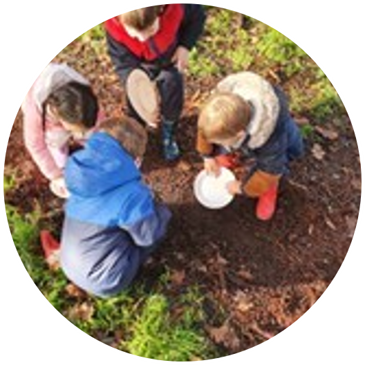
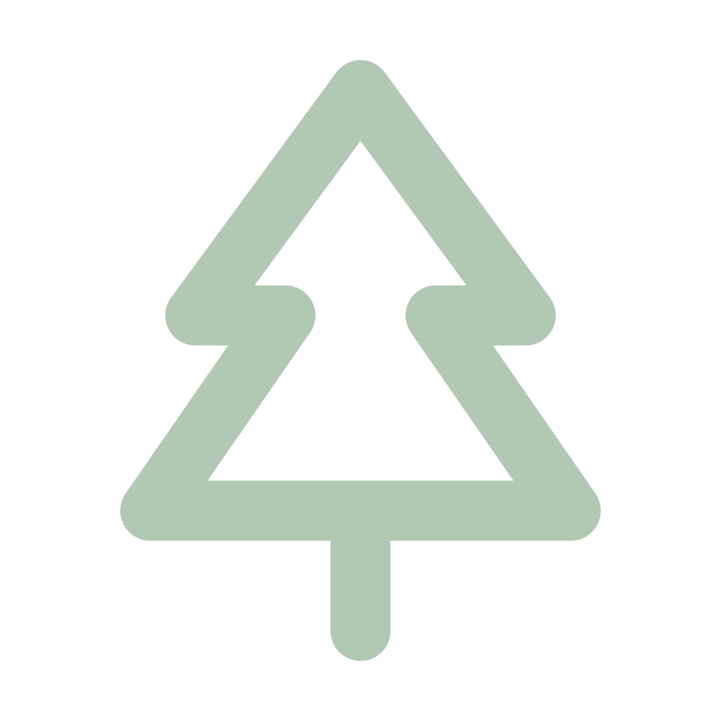

Activités sensoriellesJeux de manipulation (type Montessori), transvasements, miroirs, musiques, senteurs, parcours sensoriels, pâte à modeler, pâte à sel, sable, jardinage, pâtisserie.
Découvrez comment nous accompagnons l'éveil, la créativité et l'épanouissement des enfants chaque jour.


Activités sensoriellesJeux de manipulation (type Montessori), transvasements, miroirs, musiques, senteurs, parcours sensoriels, pâte à modeler, pâte à sel, sable, jardinage, pâtisserie.

 Motricité
MotricitéTunnel, toboggan, piscine à balles, parcours moteur, jeux extérieurs (ballons, porteurs, cabane……)

Éveil intellectuel : jeux de société, puzzle, imagiers, livres
Créativité : peinture, collage, gommette, dessin…
Jeux symbolique : dinette, poupée, boîte à outils, voitures
Le jeu libre occupe également une place essentielle dans la journée.


Lien avec la natureDes carrés potagers : observation du cycle des plantes, développer la curiosité et sens de l’observation, développement de la motricité, éveil sensoriel, coopération…
Un poulailler : Découverte du vivant, éveil sensoriel, responsabilisation, patience et respect des animaux, lien avec l’alimentation
Sensibilisation à l’écologie : tri, recyclage des déchets, compost